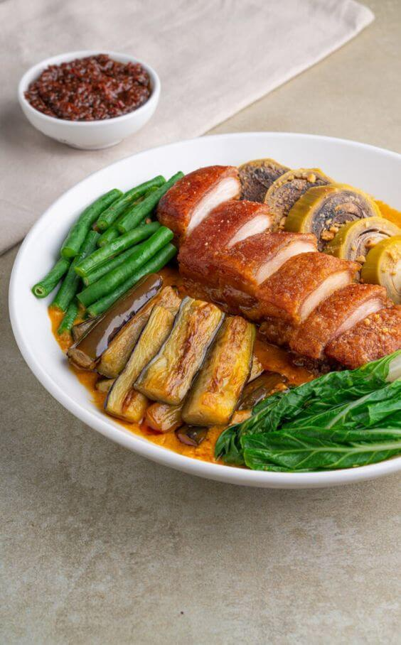
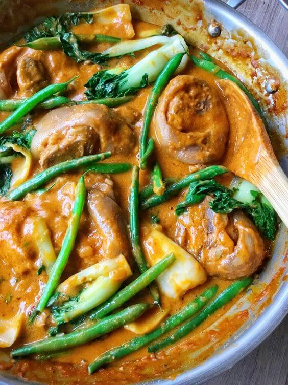
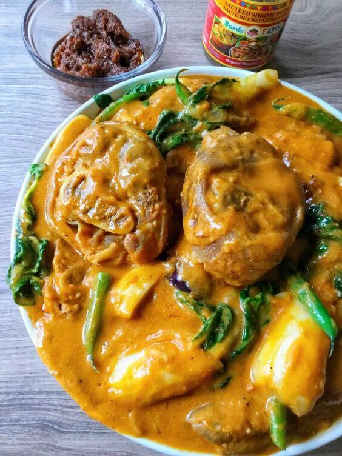

Ang lutuing ito ay kilala sa kaniyang malasa at makapigil-hiningang lasa na nagpapahiwatig ng kasaysayan at
kultura ng mga Pilipino.
Ang salitang "Kare-Kare" ay nagmula sa salitang Tagalog na "kari," na nangangahulugang "sawsawan," at
"kari-kari," na nangangahulugang "pampatikim." Ito ay isang lutuing may sabaw na kadalasang ginagawa gamit ang
buntot ng baka, tuhod ng baka, o iba pang karne tulad ng baboy o manok. Ang sabaw ng Kare-Kare ay pinalalasa
ng peanut sauce o bagoong na nagbibigay ng kakaibang lasa at tatak nito.
Ang Kare-Kare ay may kasaysayan na nauugnay sa panahon ng mga Kastila sa Pilipinas. Noong sinaunang panahon,
ang lutuing ito ay inihahanda bilang pagdiriwang sa mga espesyal na okasyon at kasalan. Ang paggamit ng peanut
sauce at bagoong sa pagluluto ng Kare-Kare ay nagpapakita ng impluwensya ng mga Espanyol sa kultura at pagkain
ng mga Pilipino.
Ang paghahanda ng Kare-Kare ay hindi lamang tungkol sa lasa nito, kundi pati na rin sa pagkakapit-bisig at
pagpapahalaga sa pamilya. Ito ay kadalasang inihahanda sa mga mahahalagang pagtitipon at handaan,
nagbibigay-daan sa mga miyembro ng pamilya na magkakasama at magbahagi ng masayang kainan. Sa bawat kainan ng
Kare-Kare, nabubuo ang mga alaala at malasakit na nagpapatatag sa pamilyang Pilipino.
Ang Kare-Kare ay isang patunay ng yaman ng lokal na sangkap sa Pilipinas. Mula sa mga buntot ng baka hanggang
sa gulay tulad ng sitaw, talong, at pechay, ito ay nagpapakita ng pagpapahalaga ng mga Pilipino sa likas na
yaman ng kanilang bansa. Ang paggamit ng peanut sauce na gawa sa mani ay nagpapahayag din ng kahalagahan ng
paggamit ng lokal na produkto.
Higit sa lahat, ang Kare-Kare ay naglalaman ng kwento ng pagkakapit-bisig, pagmamahalan, at pagpapahalaga sa
tradisyon ng mga Pilipino. Ito ay isang pagkaing nagbubuklod sa mga tao, nagpapalaganap ng kasiyahan, at
nagpapalawak ng ating kamalayan sa mga kultura at alaala ng ating bansa.
Sa bawat kutsara ng Kare-Kare na ating tinatangkilik, tayo'y sumasama sa malalim na kasaysayan, kultura, at
pagsasama ng mga Pilipino. Ito ang nagbibigay ng kakaibang kasiyahan at pagkaunawa sa mga katangian at puso ng
mga Pilipino bilang mga taong nagmamahal sa kani-kanilang pamilya at nagpapahalaga sa tradisyon.
Kare-Kare: Isa sa mga paboritong pagkaing tradisyunal sa Pilipinas


